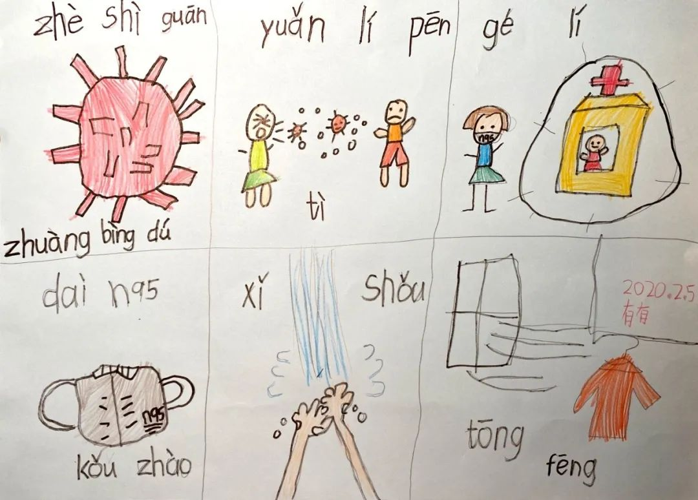
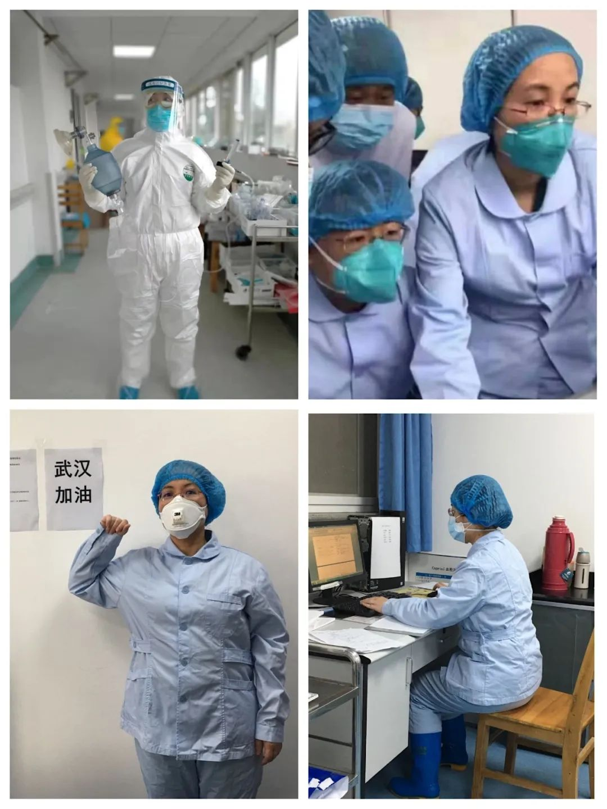
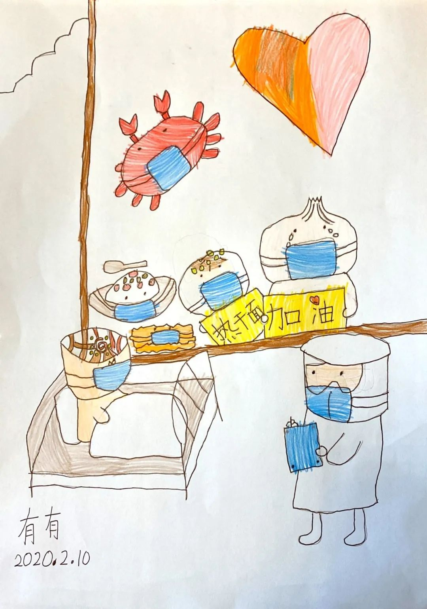
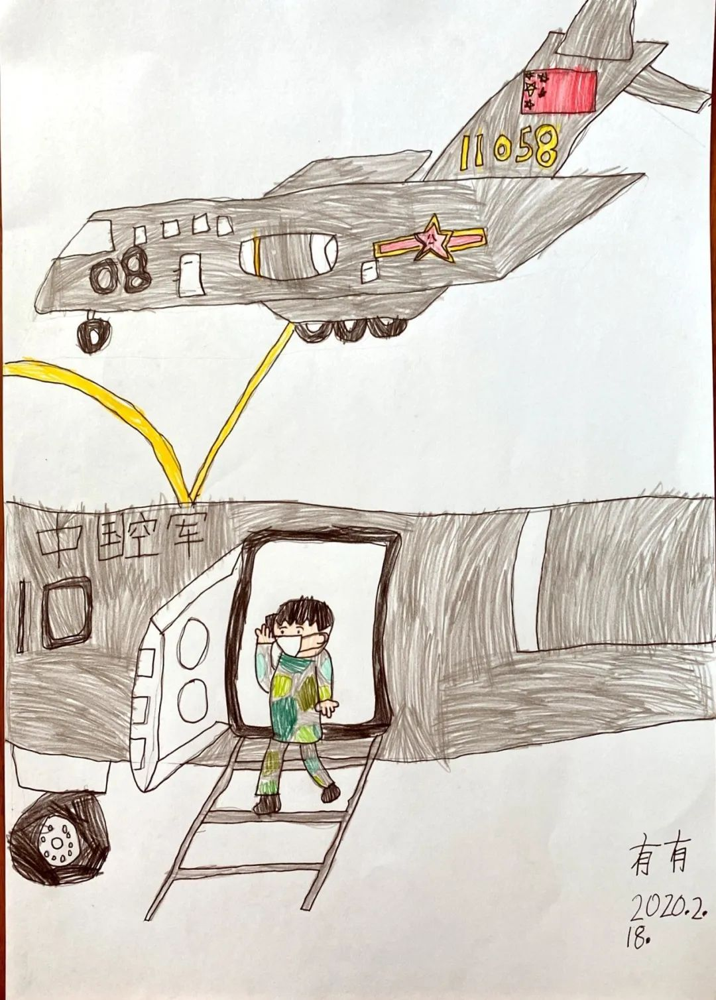
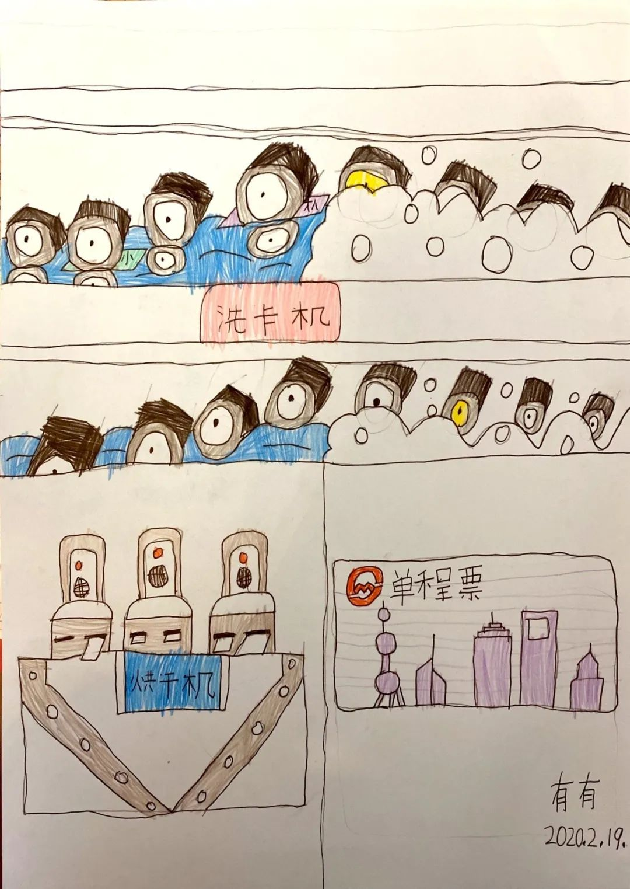
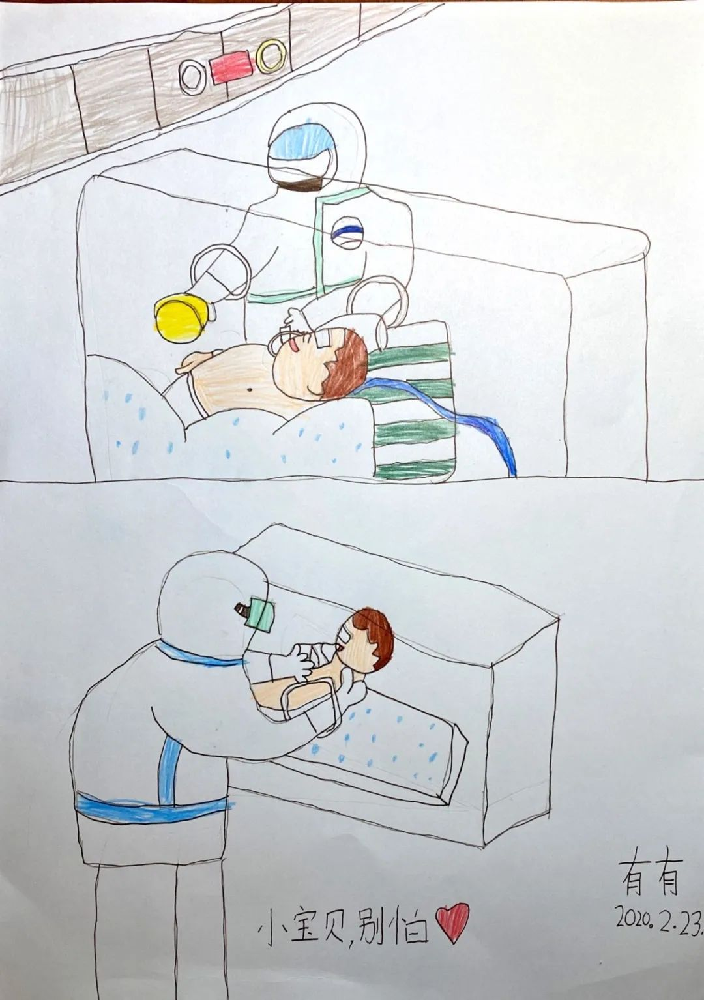
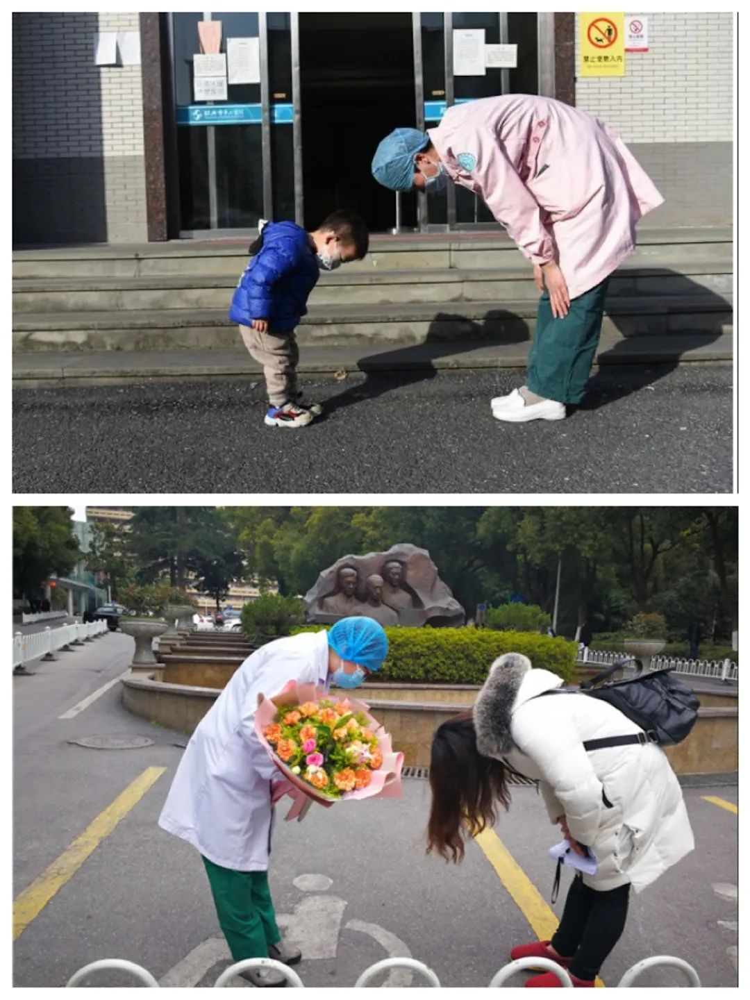

防医院内感染，是一场“苦战”——专访华山医院“医院感染管理科”主任杨帆教授
原文链接 备份链接 有时候半夜突然想到某个可能的漏洞，惊出一身冷汗。 记者 | 黄 祺 抗击新冠肺炎疫情的紧要关头，医院不能失守。 中国疾控中心2月17日的一份研究报告显示，全国已有3019名医务人员感染了新型冠状病毒，其中包括1716 …

小舅婆在战“疫”前线战斗，有有做了战地后方的“小记者”。画画内容的变化也悄然诉说着疫情的变化。

编者按
当很多小朋友把寒假过得快腻味的时候，有个叫有有的小朋友，却找到了一件有趣的持之以恒的事情——画抗疫漫画。
有有，大名蔡亦澄，是一个喜欢画画的6岁小女孩。
孩子的小舅婆（也就是孩子妈妈的舅妈）是仁济医院呼吸科的医生查琼芳，她在除夕夜随第一批援鄂医疗队出征武汉。因为舅婆的出征，孩子对新冠肺炎疫情的发展格外关注，也格外关心在前线奋战的小舅婆。
这次画画的起点就是从画小舅婆开始，之后她开始通过每天的新闻报道寻找画画的素材。每天中午和晚上的新闻是雷打不动必须要看的，上海台的新闻看完，还要看中央台的，每每看到新闻中她感兴趣的内容，就要求妈妈拍下来。
现在她依旧每天都兴致勃勃地期待着“画画时间”，她像一个小记者一样，用画画这个特殊的方式“报道”着疫情的发展。家里人都笑称：小舅婆在战“疫”前线战斗，有有做了战地后方的“小记者”。画画内容的变化也悄然诉说着疫情的变化：从最初的医院建设到各种物资支援，从隔离点的关怀到患者陆续出院，相信很快能看到医疗队员们凯旋、武汉春暖花开的美丽画面。
这个史上最漫长的寒假想必会给她留下深刻的印象，而这一幅幅图画不仅将成为她一生的珍贵回忆，也给我们留下一段可爱又感人的记录。

2月5日，关于新型冠状病毒的那些事。


2月6日，我的小舅婆。

2月10日，热干面加油。

2月11日，武汉大消杀。

2月15日，隔离点的临时妈妈。

2月16日，消毒机器人。

2月17日，热干面加油。

2月18日，军队运输机。

2月19日，地铁票喜刷刷。


2月20日，方舱医院的勤奋小姐姐。

2月23日，新生宝宝加油！


2月25日，谢谢医生。

征集令
《新民周刊》现面向全国征集新冠肺炎采访对象和真实故事：
如果你是参与抗击新冠肺炎疫情的医护人员或其家属，我们希望聆听你的“战疫”故事，也希望传达你的诉求。
如果你是确诊、疑似患者本人或家属，我们希望了解你和家人如何“抗疫”的过程，让外界了解你的真实经历。
如果你是疫情严重地区的普通市民，我们希望展现你的乐观，并倾听你所需的帮助。
如果你是公共服务人员或各类捐助者，我们希望看到你的“最美逆行”，记录下你的无私。
……
抗击新冠肺炎疫情，我们诚征对疫情了解的社会各界人士，提供相关线索，说出你的故事，让我们用新闻留存这一切。
《新民周刊》新冠肺炎线索征集值班编辑联系方式（添加时请简要自我介绍）：
周一：应 琛 微信号：paulineying0127
周二：金 姬 微信号：gepetta
周三：黄 祺 微信号：shewen-2020
周四：周 洁 微信号：asyouasyou
周五：孔冰欣 微信号：kbx875055141
周六：吴 雪 微信号：shyshine1105
周日：姜浩峰 微信号：jianggeladandong
✳如你需要捐赠物资，可与以下两位工作人员联系:王勇：WangYong-SH 吴轶君：rommy150708（添加时请注明“捐物资”，方便工作人员快速通过您的申请，谢谢。）
新闻是历史的底稿，你们是历史的见证者。期待你的故事、你的线索！

▼
大家还都在看这些
▼
新民周刊所有平台稿件， 未经正式授权
一律不得转载、出版、改编或进行
与新民周刊版权相关的其他行为，违者必究


原文链接 备份链接 有时候半夜突然想到某个可能的漏洞，惊出一身冷汗。 记者 | 黄 祺 抗击新冠肺炎疫情的紧要关头，医院不能失守。 中国疾控中心2月17日的一份研究报告显示，全国已有3019名医务人员感染了新型冠状病毒，其中包括1716 …
原文链接 备份链接 呼吁大家，为了我们这个历经磨难的国家，为了我们这群保家卫国的无名氏，为了在一线奋斗的各个方面的人们，再安心宅在家里一段时间吧，这样之前的付出才有意义！ 口述 | 亚 楠（化名） 整理 | 陈 冰 我和老公都是湖北仙桃 …
原文链接 备份链接 很多时候，流调人员不像医生，患者会主动尽可能多地给医生提供有用信息。流调人员说，希望市民在经历过疫情之后，能够了解到流调的重要性，为他们将来的工作提供更多便利。 记者 | 应 琛 当大家对新冠肺炎“零号病人”议论纷纷之 …
原文链接 备份链接 截至2月20日24时，全国有湖北、浙江、山东五所监狱发生了新冠肺炎感染疫情，这些均为输入性病例，确诊的505人中暂无死亡 图/Unsplash 文 |《财经》记者 王丽娜 俞琴 辛颖 黄姝静 编辑 | 鲁伟 截至2 …
原文链接 备份链接 整理 | 河 西 截至2020年2月22日12点，在这次疫情中，累计报告的死亡病例已经达到了2348人。 这些鲜活的生命，在一次突如其来的疫情中倒下了。他们中有普通人，也有院长、导演、院士、画家……很多都是各行各业中 …